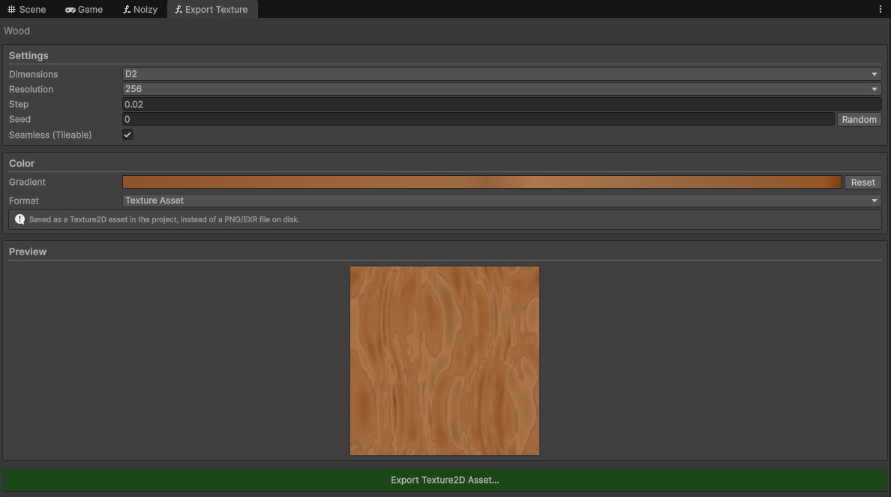

Overview
Procedural noise, without the guesswork
Noizy is a visual node-based editor for Unity. It is built on top of FastNoise2. Instead of writing code by hand to control your noise in a way that you can't even see what you're doing or changing line by line, you make noise graphs using 45+ nodes in a dedicated editor window, dragging nodes together.
Once you're done with your graph, you save it so that at runtime you can sample the asset through simple API calls to generate 2D or 3D grids of floats. It's useful for terrain generation, procedural textures, particle effects, and other gameplay systems. The compiled noise tree is cached internally, so repeated evaluations are fast.

Features
Design it, bake it, sample it anywhere
Visual Node Editor
Build noise entirely by connecting nodes in a dedicated graph window, no hand-written math, no guessing what a formula does before you hit play.
45+ FastNoise2 Node Types
Every generator, fractal, domain warp, and blend type FastNoise2 offers is available as a node, searchable straight from the graph editor's add-node window.
Live Preview
Every node shows its own live preview, and the output node previews the full combined graph as you build it. Recolor every preview with your own gradient, saved per graph.
Reusable Subgraphs
Save any chunk of a graph as a Noise Subgraph asset and drop it into as many graphs as you like. Edit it once to update everywhere it's used.
Export To Texture
Bake any graph straight to a Texture2D or Texture3D asset, or out to a PNG/EXR file, coloured through your own gradient. Includes seamless tiling for 2D.
Unity Terrain Integration
Drop a NoizyAsset onto a NoizyTerrain component and fill one or many Terrain heightmap tiles automatically, updating live in the editor as you tweak your graph.
Bake Once, Sample Anywhere
Design your graph in the editor, bake it into a NoizyAsset, then sample it at runtime with a few simple API calls. Fits terrain generation, procedural textures, and particle effects.
Grid, Point, or Batch Sampling
Pull a full 2D/3D grid, a single point for placement checks and biome lookups, or a scattered batch of arbitrary positions, whichever fits the job.
Multi-Core Grid Generation
A single Evaluate call splits the grid across the job system's worker threads automatically, sized per core so small grids don't pay for scheduling they won't get back.
Thread-Safe By Default
Sample the same asset from multiple threads at once, including background jobs and streaming systems. Each thread gets its own cached compiled tree automatically.
Burst & Job System Native Path
For hot loops that can't leave Burst-compiled code, sample directly inside an IJob/IJobParallelFor through a lightweight native tree handle.
Allocation-Friendly API
Reuse your own buffer across calls instead of allocating every frame, and get the generated min/max back for free, computed during generation.
Built-In Benchmark
Measure any graph on your actual hardware, single-threaded against parallel, and see which SIMD instruction set FastNoise2 picked for your CPU.
Editor Built To Last
Undo/redo, copy/paste/duplicate, reroute nodes for cleaner layouts, and autosave with crash/recompile recovery.
Demo Scene & Example Graphs
A runnable scene showing live noise driving a scrolling texture and a displaced terrain mesh, plus ready-made example graphs to pull apart and learn from.
Cross-Platform
Works in-editor and at runtime on Windows, macOS, and Linux, with native FastNoise2 binaries bundled for all three.
Screenshots
See it in action



Get Noizy on the Unity Asset Store
Start building procedural noise graphs in your own project today.
Get Noizy